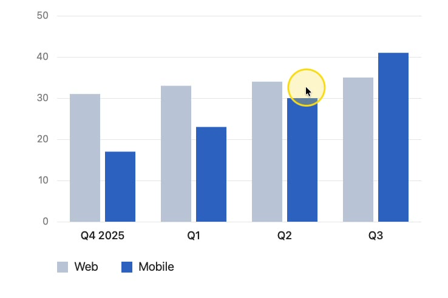
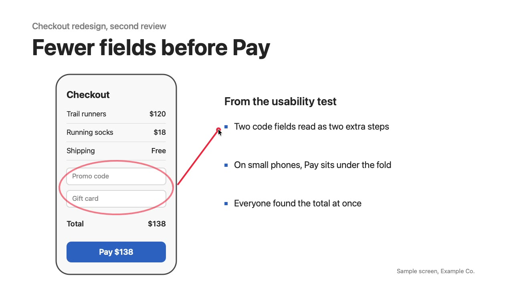
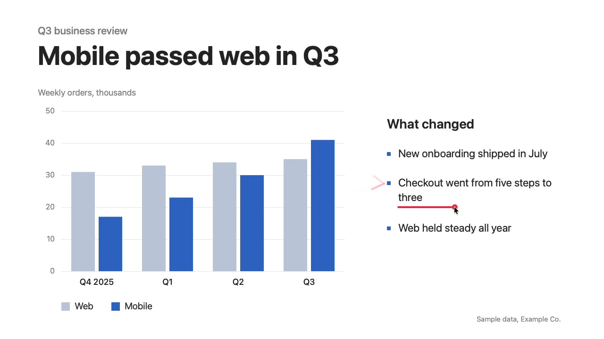

Show the call where to look.
A free Mac app to guide your audience on any shared screen.
brew install --cask lorransr/tap/chalkfy
Three sample talks: a Q3 review, a design review and a Python class in VS Code.
From install to the call
-
Install with brew
Or download the zip. Chalkfy is not notarized, so macOS asks once: click Open Anyway in Privacy & Security.
Installbrew install --cask lorransr/tap/chalkfyUpdatebrew upgrade --cask chalkfy -
Allow Accessibility
Only the Laser needs it. The grant applies with no relaunch and stays across updates.
- Open
- The Chalkfy icon in the menu bar
- Choose
- Request Accessibility Permission
- Turn on
- Chalkfy, in System Settings
-
Ring the cursor
⌃⌥H
A ring follows the cursor so the audience finds it. Press again to turn it off.

-
Draw, then let it fade
⌃⌥L
Drag to draw a red stroke. It fades by itself, and the drag never reaches the app below. Esc turns it off.

Runs on any Mac since Sonoma
| macOS | 14 Sonoma or later |
|---|---|
| Chip | Apple silicon and Intel |
| Price | 0 USD, no account |
| Source | Open source, MIT |
| Firefox-based browsers | One setting |
Keep Chalkfy free
Tips pay for the time behind the next version.
Ko-fi
Card or PayPal, from anywhere.
Ko-fi page to be announced
Pix
Para quem está no Brasil: copie a chave e cole no app do seu banco.
Chave Pix a definir
